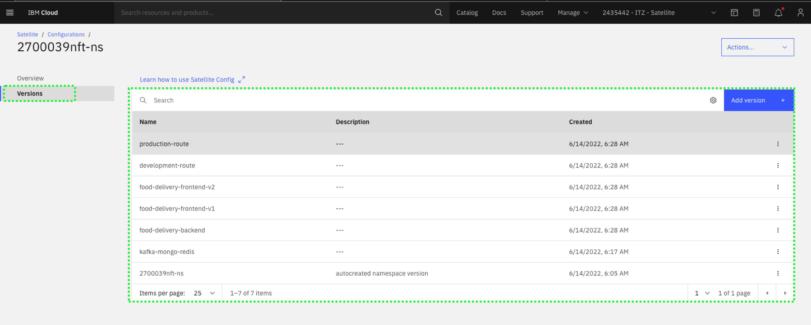

Command Line Interfaces (CLIs) are available for IBM Cloud Satellite. In this section, explore the CLI capabilities related to IBM Cloud Satellite Locations. You can learn more about all the IBM Cloud Satellite CLIs here. When doing client demonstrations, it is important to understand who is in your audience. Performing demonstrations of CLIs to a Chief Technology Officer (CTO) or Chief Information Officer (CIO) may not be well received; however, this type of demonstration may resonate well with other audiences like members of the IT staff, line-of-business developers, and others. These audiences will want to know that CLIs exist to perform the IBM Cloud Satellite tasks as they will probably want to further automate them in their deployments.
Overview of IBM Cloud Satellite CLIs
In this part of the demonstration, you will use the IBM Cloud Shell. If you are not familiar with IBM Cloud Shell, you can learn about it here. In most of the steps below, copy the command line using the  icon and paste it into the IBM Cloud Shell using Ctrl+v, Cmd+v, or right click and select paste at the prompt in the IBM Cloud Shell.
icon and paste it into the IBM Cloud Shell using Ctrl+v, Cmd+v, or right click and select paste at the prompt in the IBM Cloud Shell.
- In the IBM Cloud Portal, with the demonstration account selected (2435442 - ITZ - Satellite), click the IBM Cloud Shell icon. If you closed the portal, open here.

The IBM Cloud Shell will open in a new browser tab or window. It may take a few seconds for the shell to initialize.

- Synchronize the IBM Cloud portal Identity and Access Management (IAM) permissions with the Role-based access controls (RBAC) for the IBM Cloud Satellite Location's OpenShift cluster.
Important
Do not skip this exercise. If you do not complete this step later parts of the demonstration script are likely to fail.
Example output
OK
The configuration for cajmcb3w0omsgg4vtq60 was downloaded successfully.
Added context for cajmcb3w0omsgg4vtq60 to the current kubeconfig file. You can now execute 'kubectl' commands against your cluster. For example, run 'kubectl get nodes'. If you are accessing the cluster for the first time, 'kubectl' commands might fail for a few seconds while RBAC synchronizes.
Important
The above command forces the RBAC to be synchronized between IBM Cloud and the Red Hat OpenShift cluster running in the IBM Cloud Satellite Location. If this command is not run, issues may be encountered later in this demonstration.
- List the IBM Cloud Satellite Locations.
Example output
Retrieving locations...
OK
Name ID Status Ready Created Hosts (used/total) Managed From
yl-l3-aws cad1ulgw093e0708rkt0 normal yes 4 days ago 12 / 12 wdc
- Get the details for a specific IBM Cloud Satellite Location.
Example output
Retrieving location...
OK
Name: yl-l3-aws
ID: cad1ulgw093e0708rkt0
Created: 2022-06-03 14:48:54 +0000 (4 days ago)
Managed From: wdc
State: normal
Ready for deployments: yes
Message: R0001: The Satellite location is ready for operations.
Hosts Available: 0
Hosts Total: 12
Host Zones: us-east-2a, us-east-2b, us-east-2c
Provider: aws
Provider Region: us-east-2
Provider Credentials: yes
Public Service Endpoint URL: https://c107.us-east.satellite.cloud.ibm.com:31117
Private Service Endpoint URL: -
OpenVPN Server Port: -
Ignition Server Port: -
Konnectivity Server Port: 30696
Logging Key Set: no
Activity Tracker Key Set: no
- Get a list of the hosts associated with a specific IBM Cloud Satellite Location.
Example output
Retrieving hosts...
OK
Name ID State Status Zone Cluster Worker ID Worker IP
ip-10-0-1-107 289f4f6e3d1a3c42d29d assigned Ready us-east-2a yl-l3-aws-roks-1 sat-ip1001107-1ee31562dda0bcd519bc8beea3614836eb83fe18 10.0.1.107
ip-10-0-1-14 0b831f71a8d326ee90b8 assigned Ready us-east-2a yl-l3-aws-roks-1 sat-ip100114-25b1fbbb379b638dde07d7de5f7ee1c6709713f5 10.0.1.14
ip-10-0-1-226 b4442548c25c1433d7e5 assigned Ready us-east-2a infrastructure sat-ip1001226-bb043735a3c21665c2b594f06a9c92685a491887 10.0.1.226 ip-10-0-1-4 22c2a1b04aff873c9f04 assigned Ready us-east-2a yl-l3-aws-roks-1 sat-ip10014-8d8549797efbe24b18cbad62ec223b2ce976ddac 10.0.1.4
ip-10-0-2-140 bb98074e3ec369933b25 assigned Ready us-east-2b infrastructure sat-ip1002140-e63e7ac9df2602fc91be1372cc7052e934f4cf23 10.0.2.140
ip-10-0-2-15 7bc6a0ae9f52e9f49361 assigned Ready us-east-2b yl-l3-aws-roks-1 sat-ip100215-6d04589925c7dd655ab18ed8a8f2199295271328 10.0.2.15
ip-10-0-2-168 ff15fc49a3c753607e57 assigned Ready us-east-2b yl-l3-aws-roks-1 sat-ip1002168-05ea71e250a4d2ee101f2a4487323dc5a126da20 10.0.2.168
ip-10-0-2-71 5c64f7f1e532d60dd221 assigned Ready us-east-2b yl-l3-aws-roks-1 sat-ip100271-5c0a3c15c3326535b07a0679e16a30977e5b8bc9 10.0.2.71
ip-10-0-3-111 b9b8a67a1b6ca33671cc assigned Ready us-east-2c infrastructure sat-ip1003111-ce17f52dba844e500fdca4a10a05b5a02ab66cc3 10.0.3.111
ip-10-0-3-122 f03bbefa2b076dea98f4 assigned Ready us-east-2c yl-l3-aws-roks-1 sat-ip1003122-f8db0228dc7bfa4e0cae336381badada5fd96978 10.0.3.122
ip-10-0-3-18 fd4035666c40c463e156 assigned Ready us-east-2c yl-l3-aws-roks-1 sat-ip100318-9fecf3e6ff050f8c5e934e974610440d82572360 10.0.3.18
ip-10-0-3-230 5d6fbf6d5440d636743f assigned Ready us-east-2c yl-l3-aws-roks-1 sat-ip1003230-95ff4fb6c3c07fc19652f42e8bfa6a6284a78451 10.0.3.230
If this fails
Occasionally, the above command may time out with a "FAILED: Could not complete request" message. Try running the command again.
- Get the details for a specific host.
Tip
You may need to replace the string ip-10-0-2-11 with the name of one of the hosts from the previous command.
Example output
Retrieving host details...
Name: ip-10-0-1-107
ID: 289f4f6e3d1a3c42d29d
State: assigned
Status: Ready
Zone: us-east-2a
Labels
memory 15963132
os RHEL7
provider aws
zone us-east-2a
cpu 4
env prod
Assignment
Cluster: yl-l3-aws-roks-1
Worker Pool: default
Worker ID: sat-ip1001107-1ee31562dda0bcd519bc8beea3614836eb83fe18
Worker IP: 10.0.1.107
OK
All the commands executed above are commands that list or view the details of an IBM Cloud Satellite object. There are also commands to create, remove, and modify these objects. In this demonstration environment, you do not have permissions to add, remove or change Locations or Hosts.
Create Versions for the Food Delivery application
Now that you are familiar with the CLIs for IBM Cloud Satellite, you can create the other 5 versions for our demonstration.
To save time and prevent typographical errors, an automated script has been created for you. The script is interactive and will display all the command lines as they are executed. The script will do the following:
- Download all the YAML files that will be used for the versions.
- Update the YAML files with your unique Satellite configuration and project/namespace in the OpenShift clusters.
- Create the remaining 5 versions required for the Food Delivery application.
- Download the automated script by copying the command below and pasting it in the IBM Cloud Shell at the prompt:
wget https://raw.githubusercontent.com/IBM/SalesEnablement-Satellite-L3-Sales/main/tools/createVersions.bash
Example output
--2022-05-31 15:19:50-- https://raw.githubusercontent.com/IBM/SalesEnablement-Satellite-L3-Sales/main/tools/createVersions.bash
Resolving raw.githubusercontent.com (raw.githubusercontent.com)... 185.199.108.133, 185.199.110.133, 185.199.109.133, ...
Connecting to raw.githubusercontent.com (raw.githubusercontent.com)|185.199.108.133|:443... connected. HTTP request sent, awaiting response... 200 OK
Length: 12725 (12K) [text/plain]
Saving to: ‘createVersions.bash’
createVersions.bash 100%[==================================================================================================================>] 12.43K --.-KB/s in 0.001s
2022-05-31 15:19:50 (14.1 MB/s) - ‘createVersions.bash’ saved [12725/12725]
- Change the permissions of the script so it can execute by copying the command below and pasting it in the IBM Cloud Shell at the prompt:
- Run the script by copying the command below and pasting it in the IBM Cloud Shell at the prompt and when prompted with a question, enter y for yes:
Example output
Retrieving your IBM Cloud Unique ID using command: ibmcloud account user-preference
Do you want to retrieve all the YAML files from the git repository (https://raw.githubusercontent.com/IBM/SalesEnablement-Satellite-L3/main) (y|n)? y
Retrieving food-delivery-backendfood-delivery-backend.yaml 100%[==================================================================================================================>] 5.21K --.-KB/s in 0.001s
Retrieving food-delivery-frontend-v1
food-delivery-frontend-v1.yaml 100%[==================================================================================================================>] 746 --.-KB/s in 0s
Retrieving food-delivery-frontend-v2
food-delivery-frontend-v2.yaml 100%[==================================================================================================================>] 746 --.-KB/s in 0s
Retrieving development-route
development-route.yaml 100%[==================================================================================================================>] 2.39K --.-KB/s in 0s
Retrieving production-route
production-route.yaml 100%[==================================================================================================================>] 2.39K --.-KB/s in 0s
get mkdocs.yml
mkdocs.yml 100%[==================================================================================================================>] 4.43K --.-KB/s in 0.001s
Verify your configuration exists (y|n)? y
2700039nft-ns configuration exists - UUID = 5208ee8e-75d0-4309-bb0a-c7f38bdee363
Substitute all placeholders in YAML files (y|n)? y
Updating food-delivery-backend.yaml
Updating food-delivery-frontend-v1.yaml
Updating food-delivery-frontend-v2.yaml
Updating development-route.yaml
Updating production-route.yaml
Do you want to create the versions in your configuration (y|n)? y
Creating version food-delivery-backend using food-delivery-backend.yaml:
ibmcloud sat config version create -name food-delivery-backend --read-config food-delivery-backend.yaml --config 5208ee8e-75d0-4309-bb0a-c7f38bdee363 --file-format yaml
Creating configuration version...
OK
Configuration Version food-delivery-backend was successfully created with ID f25371c1-4bbb-4ada-9d85-a1a0fd5449f2.
Creating version food-delivery-frontend-v1 using food-delivery-frontend-v1.yaml:
ibmcloud sat config version create -name food-delivery-frontend-v1 --read-config food-delivery-frontend-v1.yaml --config 5208ee8e-75d0-4309-bb0a-c7f38bdee363 --file-format yaml
Creating configuration version...
OK
Configuration Version food-delivery-frontend-v1 was successfully created with ID dd1e8a5e-2076-4237-b03c-520c38802db5.
Creating version food-delivery-frontend-v2 using food-delivery-frontend-v2.yaml:
ibmcloud sat config version create -name food-delivery-frontend-v2 --read-config food-delivery-frontend-v2.yaml --config 5208ee8e-75d0-4309-bb0a-c7f38bdee363 --file-format yaml
Creating configuration version...
OK
Configuration Version food-delivery-frontend-v2 was successfully created with ID f586d528-7090-40c4-9cbb-81ff5eca98fe.
Creating version development-route using development-route.yaml:
ibmcloud sat config version create -name development-route --read-config development-route.yaml --config 5208ee8e-75d0-4309-bb0a-c7f38bdee363 --file-format yaml
Creating configuration version...
OK
Configuration Version development-route was successfully created with ID 688010c9-6d54-4800-8f47-542608cfde77.
Creating version production-route using production-route.yaml:
ibmcloud sat config version create -name production-route --read-config production-route.yaml --config 5208ee8e-75d0-4309-bb0a-c7f38bdee363 --file-format yaml
Creating configuration version...
OK
Configuration Version production-route was successfully created with ID dd73466a-7d81-44fa-af44-e56332ba4fae.
Do you want to remove temporary files (y|n)? y
Now that the script has executed, return to the IBM Cloud Portal and verify all 6 versions now exist. You should also explore the YAML files that are used by each subscription. Return to your Satellite configuration in the IBM Cloud Portal and examine the versions that have been created. You should see a total of seven versions. The six that you created:
- kafka-mongo-redis
- food-delivery-backend
- food-Delivery-frontend-v1
- food-delivery-frontend-v2
- development-route
- production-route
